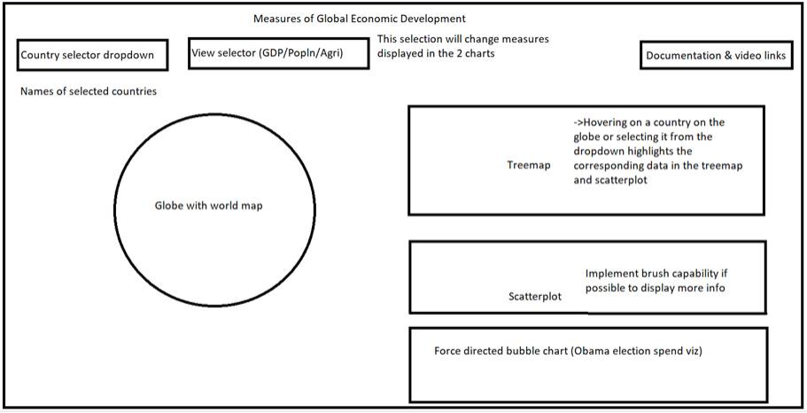
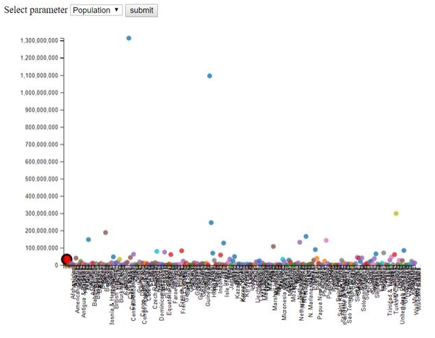

Measures
of Global Economic Development
Team
Members: Aishwarya Kholkute, Nandini Raja, Taylor Childers
Design
Documentation
Motivation
The
motive behind the chosen topic was to analyze the measures that contribute
towards the development of a country and to compare the variation amongst
different countries for each of these measures. Our aim was to understand why
certain countries may be considered more developed than others and the factors
that drive economic development in these countries. We also wanted to explore
of there is any interaction among the different attributes with one driving
another.
The
dataset we chose is a compilation of global data called 'World Factbook'
published by the CIA and available on Kaggle as 'Countries of the World'. The
dataset contains information for 227 countries and 19 attributes of each
country such as GDP, Population, Literacy, Agriculture etc. This data has been
compiled for the fiscal year 2010.
With
this dataset and through our visualization, we have attempted to answer the
following breadth and depth questions
1. Which
are the countries with highest GDP?
Are literacy levels and GDP correlated? Is
there a pattern by region?
Do industries play a role in affecting the GDP
of a country?
2. What
is the global population distribution?
Which are the countries with highest birth
rates, death rates and infant mortality?
Is there a correlation between birth rate and
death rate?
3. Which
are the countries with the highest levels of agriculture?
In these countries, how much of the arable
land is used for agriculture?
Does production of a variety of crops
influence GDP?
Design Process
Since our
chosen dataset deals with various attributes of countries around the world along
with region data, we decided to include a globe to effectively portray the global
data. The globe can also be used as a selector to highlight the data shown in
the rest of the visualization. Hovering on a country selects the corresponding
country's data on both the treemap and scatter plot. A search box was also
included to be able to select multiple countries at a time or to select a
country more easily by searching for it using text. The attributes chosen for
the main views to analyze the breadth questions were GDP, Population and
Agricultural level since these can be major indicators of a nation's
development. The dataset also had factors related to these three attributes
using which our depth questions were analyzed. A dropdown selector was chosen
to be able to control the breadth question to be addressed in the view.
Supporting charts were designed to establish the relationship between the various
measures to answer the depth questions and to analyze interactions between the
global attributes.
The below
sketch shows an initial layout of the intended visualization.

A treemap
and scatterplot were chosen to depict the data to answer our depth questions.
Since the globe acts as a selector, it was placed on the left along with the country
dropdown and view selector dropdown. The
charts were placed on the right of the globe to be able to view the
interactions (between globe and charts and also between the 2 charts) clearly.
An initial
version of the treemap is below. Data from the csv file was converted to a json
format to draw the parent and children nodes. The color scheme of the treemap
was to be a linear scheme varying from green to red. Due to difficulties in
achieving this in the treemap while dealing with parent and child nodes, the
color scheme was changed to ordinal with different colors to differentiate between
the regions. A tooltip was used to display the data for each country since the
numbers were getting cut-off in certain rectangles of smaller size. The size of
the map was also adjusted to ensure clear visibility of names as much as
possible.
An initial
layout of a bubble chart is below with population values on the Y axis and
country names on the X axis. Since it was not possible to fit all 227 countries
in the X axis, the bubble chart was changed to a scatter plot to show the
relationship between 2 measures that relate to the breadth question being
considered. Each circle of the scatterplot represents a country and tooltips
were used to display the country name along with the value of the measure. The
circles were also colored according to the region of the country to understand if
all the countries in a region had similar values for an attribute. This would
help us analyze region wise behavior better.

Hovering
on a region on the treemap also highlights data belonging to all countries in
that region in the scatter plot by increasing the circle radius. Since the
globe can be used to select country-wise data, this functionality was added to
view a region-wise data comparison in the scatter plot.
Colors of
the visualization were chosen to be pleasing and to be able to differentiate
between countries or regions easily.
The force
directed bubble chart was not implemented since depth questions were answered
with the help of the treemap and scatter plot.
Design Justification
Since the
visualization deals with global data, a globe was chosen to implement a filter
functionality to choose countries of interest and act as a selector for the
rest of the visualization. A globe also saves real estate on the visualization
when compared to a map and the rotation adds aesthetic value.
Since the
dataset contained region level and country level data, a treemap was chosen so
that a region-wise summary of the chosen measure could also be viewed. Clicking
on a region drills down to show more granular data at the country level. In
this way, both region level and country level hierarchical data can be shown
efficiently on the same chart.
To answer
our depth questions, we wanted to analyze the interactions between a pair of certain
measures. The best way to do this was using a scatterplot so that correlations and
interactions between measures can be easily seen. The circles of the
scatterplot are also color coded according to region to be able to quickly see
any similarities or variances in countries within a single region.
Colors
were used as an effective way to differentiate between countries and regions in
the charts. The ordinal scale available in D3 was chosen to set pleasing colors
that go with the appearance of the visualization.
Findings
From the
visualization, we can see that Luxembourg has the highest GDP per capita. On
deeper analysis, it was found that Luxembourg enjoys a significantly high GDP
per capita due to its low population and high foreign investments. As a whole,
countries belonging to the Northern America and Western Europe regions have
higher GDP per capita when compared with the rest of the world. Countries in
the Sub-Saharan Africa region have the lowest global GDP per capita values. We
also see a positive correlation between GDP and literacy levels. We can
therefore conclude that higher literacy levels in a country can improve the
development of the country and lead to higher GDP per capita. We also see that
the percentage contribution of industries to the economy of a country is low.
Countries in Sub-Saharan Africa have the highest amount of industries
contributing to the economy, but they also have relatively low GDP Per Capita.
Additionally,
we see that, as expected, Asia has the highest global population with China and
India being the 2 most populous countries. Niger has the highest Birth Rate and Hong Kong
has the lowest. Swaziland has the highest death rate while Mariana Islands has
the lowest. As a whole, countries in the Sub-Saharan Africa region have high
birth and death rates. This could be due to a lack of awareness and poor health
facilities. We also see that countries in the Near East region such as Oman and
Saudi Arabia have high birth rates and low death rates sue to increased medical
facilities. Such a correlation could be indicative of a relatively higher
increase in population in these countries when compared to the rest of the
world.
Liberia is
the country with the highest level of agricultural production while Singapore
has the lowest. This can be considered accurate since Singapore has no local
agricultural production and imports all produce from neighboring countries. As
a whole, we see that Sub-Saharan African countries have the highest amount of
agricultural production although they have relatively lesser arable land. This
could be because the conducive tropical weather helps plants grow even when
soil conditions are not very good. On the other hand, we see that Eastern
European countries such as Hungary have a larger percentage of arable land but
low agricultural production. This could once again be attributed to the harsh
climate of Europe. The country with the highest percent of economy derived from
crop production is Kiribati.
As a
whole, by comparing various different attributes to measure overall
development, we can see that countries belonging in the Eastern Europe region
are the most developed and countries in the Sub-Saharan Africa region are the
least.
Reflection
This
visualization helped us understand various measures of a country at a macro-economic
level. Based on findings from the visualization, further research and analysis
can be conducted to identify causes behind certain attribute values based on
observed correlations. One drawback of the visualization is that it does not
give a complete and holistic picture of all the measures that drive growth for
all countries. For example, there is no import/export data or employment rates
which could also contribute to development in certain countries. This
visualization can be considered as a starting point to gain knowledge on the
countries with higher GDP, industrialization, literacy etc. and further
analysis can be done to identify specific causes to determine the exact major
contributing factor towards development and ways to improve it.